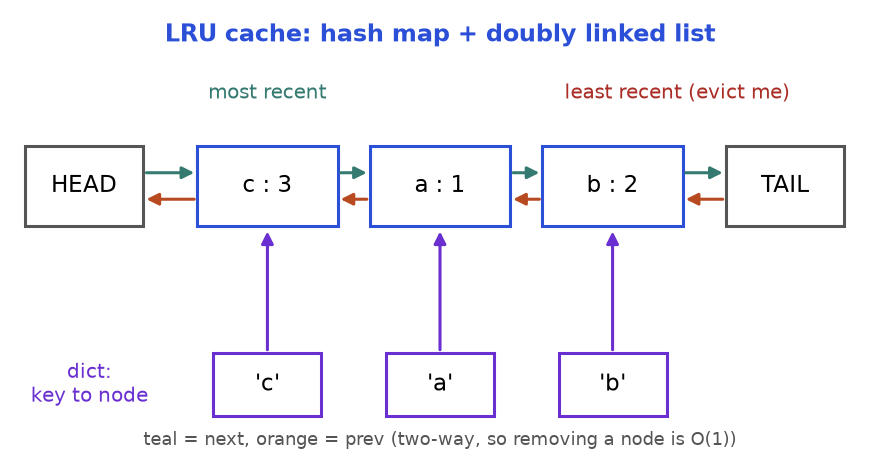
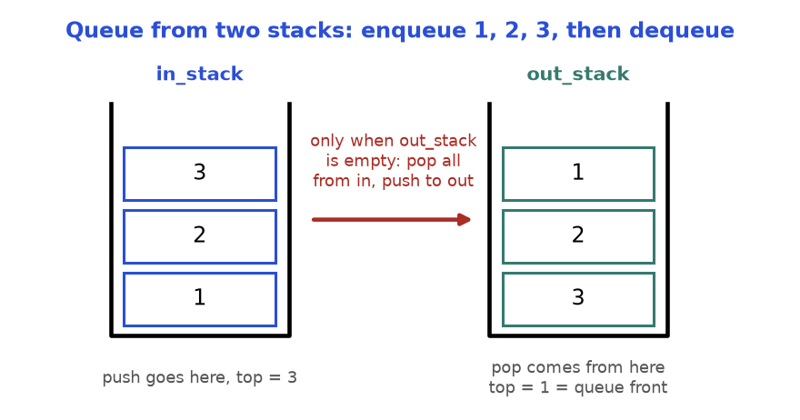
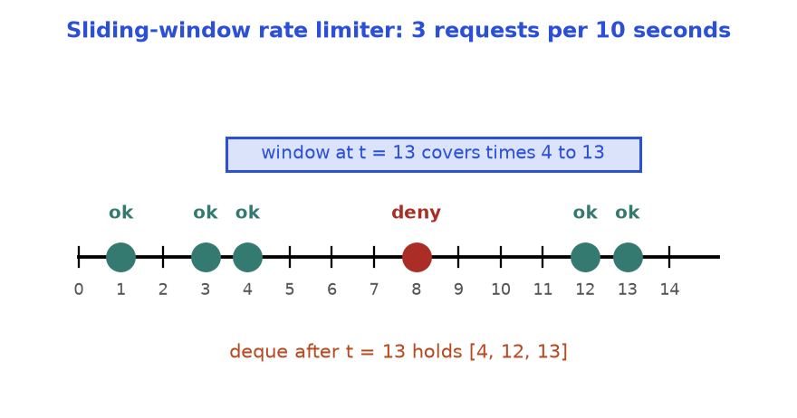
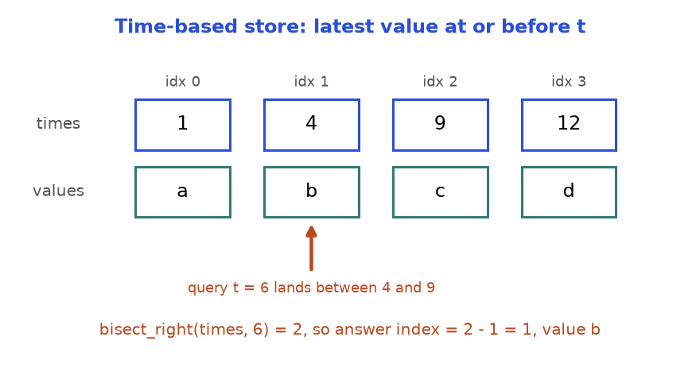
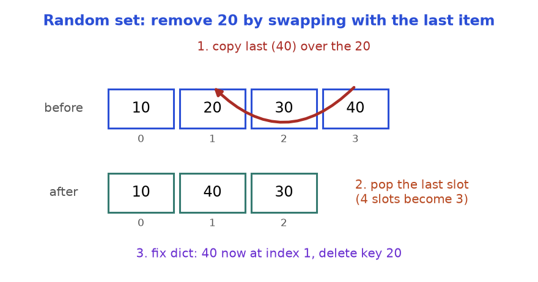
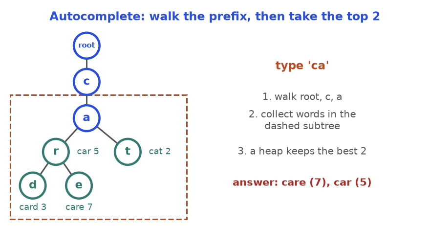
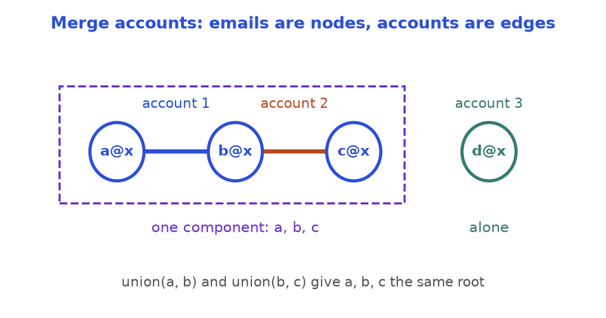
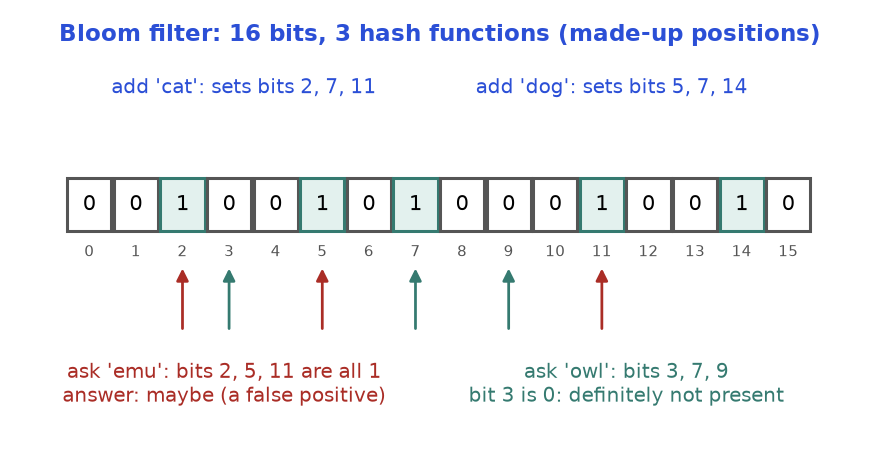
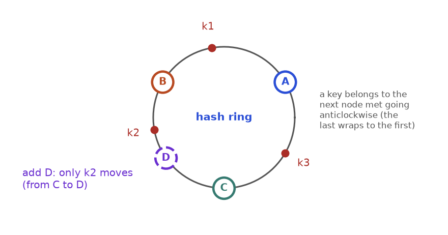

Picture your phone keyboard. You type "ca" and it offers "car", "care" and "cat" before you finish. A web server remembers the last 1,000 pages it built so it does not rebuild them. A login page refuses your 11th wrong password in one minute. None of these needs a new algorithm. Each is a design: you take two or three structures you already know and glue them into one object whose operations are all fast. A dictionary alone cannot remember order. A list alone cannot find things quickly. Together they can do both.
Interviewers love these questions because they test whether you know what each tool is good at, and can say so out loud. After this chapter you will build an LRU cache, a min stack, a queue from two stacks, a rate limiter, a time-based store, a snapshot array, an O(1) random set, an autocomplete engine and an accounts merger from memory. You will also know what a Bloom filter and consistent hashing are for, why threads break naive code, and how to talk through a design question calmly.
Earlier chapters used: hashing (Chapter 2), binary search (Chapter 4), linked lists, stacks and deques (Chapter 5), heaps and tries (Chapter 7), union-find (Chapter 8). Chapter 12 shows how to spot design questions among all the other patterns. For a shorter tour, see also Chapter 8 and Chapter 9 of the Linux, Git, Algorithms and CS Foundations document. All code below was run and the printed output is real; every block is standalone.
| Word | Plain meaning |
|---|---|
| API | The operations a user may call, with inputs and outputs, such as get(key) and put(key, value) |
| Invariant | A fact that must be true after every operation, such as "the dict and the list hold the same keys" |
| Amortised O(1) | One call may be slow now and then, but the average over many calls is constant (Chapter 1) |
| Sentinel | A dummy node at the ends of a list, so there is never an "empty" or "first" special case |
put, get, push, pop, add, remove, each with a required speed (usually average O(1) or O(log n)).| If you need fast... | Reach for | Cost |
|---|---|---|
| Find by key | dict / set | O(1) average |
| Move or remove a node you already hold | doubly linked list | O(1) |
| Delete from an array when order is free | swap with last, pop | O(1) |
| Newest or oldest only | stack / deque | O(1) at both ends |
| Smallest or largest, repeatedly | heap (heapq) | O(log n) |
| Latest value at or before a time | sorted list + bisect | O(log n) |
| All words with a prefix | trie | O(prefix length) |
| "Same group?" with merges | union-find | almost O(1) |
OrderedDict) to give O(1) get and put. LFU removes the least frequently used item instead.get and put must both be O(1), and reading an item counts as using it.A dictionary finds a key in O(1) but knows nothing about "oldest". A doubly linked list keeps order and removes any node in O(1) if you hold the node, but cannot find one by key. Combine them: the dictionary maps key to node, and the list orders nodes from newest (next to HEAD) to oldest (next to TAIL).

How to read it: the purple arrows let you jump to a node. The two-way arrows let you cut it out and re-insert it next to HEAD with no walking. HEAD and TAIL are sentinels.
collections.OrderedDict already is "dict + linked list". move_to_end(key) marks a key newest; popitem(last=False) removes the oldest. Ask whether you may use it; if not, build it by hand (Problem 11.2.1).
from collections import OrderedDict
class LRUCache:
def __init__(self, capacity):
self.cap = capacity
self.data = OrderedDict() # oldest first, newest last
def get(self, key):
if key not in self.data:
return -1
self.data.move_to_end(key) # reading counts as using
return self.data[key]
def put(self, key, value):
if key in self.data:
self.data.move_to_end(key)
self.data[key] = value
if len(self.data) > self.cap:
self.data.popitem(last=False) # drop the oldest
c = LRUCache(2)
c.put(1, 10)
c.put(2, 20)
print(c.get(1))
c.put(3, 30)
print(c.get(2))
print(list(c.data.items()))10
-1
[(1, 10), (3, 30)]| Step | Operation | What happens | State after | Returns |
|---|---|---|---|---|
| 1 | put(1, 10) | new key, room left | [1] | - |
| 2 | put(2, 20) | new key, room left | [1, 2] | - |
| 3 | get(1) | found, move 1 to newest | [2, 1] | 10 |
| 4 | put(3, 30) | size 3 > 2, evict oldest (2) | [1, 3] | - |
| 5 | get(2) | 2 was evicted | [1, 3] | -1 |
| 6 | put(4, 40) | size 3 > 2, evict oldest (1) | [3, 4] | - |
| 7 | get(3) | found, move 3 to newest | [4, 3] | 30 |
get returns the value but does not refresh the order, so the cache evicts a key you just read. Right: every successful get and every put of an existing key moves that key to newest. Test: capacity 2, put 1, put 2, get 1, put 3. Key 2 must go.Problem 11.2.1 (medium) Build the LRU cache by hand: a dictionary of nodes plus a doubly linked list with HEAD and TAIL sentinels. No OrderedDict. get and put must be O(1).
| Idea | Dictionary: key to node. List: newest after HEAD, oldest before TAIL. Helpers _remove and _add_front do all the pointer work. |
|---|---|
| Brute force | One list of pairs: search O(n), move O(n). |
| Better approach | The dictionary gives the node in O(1); its prev/next let us unlink it in O(1). |
| Code | Below. Each node stores its key, so evicting the tail tells us which dictionary entry to delete. |
| Dry run | The trace above. After step 4 the list reads HEAD, 3, 1, TAIL. |
| Complexity | O(1) per call, O(capacity) space. |
| Edge cases | Capacity 1; updating an existing key (no eviction); capacity 0 (guard it, or the sentinel is evicted). |
class Node:
def __init__(self, key=0, val=0):
self.key, self.val = key, val
self.prev = self.next = None
class LRUCache:
def __init__(self, capacity):
self.cap = capacity
self.map = {} # key -> Node
self.head, self.tail = Node(), Node() # sentinels
self.head.next, self.tail.prev = self.tail, self.head
def _remove(self, node): # unlink in O(1)
node.prev.next = node.next
node.next.prev = node.prev
def _add_front(self, node): # newest sits right after head
node.prev = self.head
node.next = self.head.next
self.head.next.prev = node
self.head.next = node
def get(self, key):
if key not in self.map:
return -1
node = self.map[key]
self._remove(node)
self._add_front(node)
return node.val
def put(self, key, value):
if self.cap == 0:
return
if key in self.map: # update value and refresh
node = self.map[key]
node.val = value
self._remove(node)
self._add_front(node)
return
if len(self.map) == self.cap: # full: evict the oldest
oldest = self.tail.prev
self._remove(oldest)
del self.map[oldest.key]
node = Node(key, value)
self.map[key] = node
self._add_front(node)
c = LRUCache(2)
out = []
c.put(1, 10); c.put(2, 20)
out.append(c.get(1))
c.put(3, 30)
out.append(c.get(2))
c.put(4, 40)
out += [c.get(1), c.get(3), c.get(4)]
print(out)
assert out == [10, -1, -1, 30, 40]
one = LRUCache(1)
one.put(5, 1); one.put(5, 2); one.put(6, 3)
print(one.get(5), one.get(6))[10, -1, -1, 30, 40]
-1 3del self.map[oldest.key]. The map keeps pointing at a node that left the list, and its size never shrinks. Right: store the key in the node and delete from both structures in the same method. That is the invariant.LFU evicts the key used the fewest times; ties go to the least recently used among them. The O(1) design is: a use-count per key, one OrderedDict (a mini LRU list) per count, and a variable min_freq naming the lowest count present. A use moves a key from bucket f to bucket f + 1; eviction takes the oldest key in bucket min_freq; a brand-new key always starts at count 1. LRU adapts quickly to change but a one-off scan can flush it. LFU protects popular items but is slow to forget an item that was popular last week (Practice problem 11.9.20).
functools.lru_cache is an LRU cache for function results, written in C and guarded by a lock (see 11.8).A stack only changes at the top, so next to each item we can store the minimum of everything at or below it, and it never goes stale. (Chapter 5 drew this; see its min-stack figure.) Trace: push 5, 3, 7, 3, 8, then pop three times.
| Step | Operation | items | mins | get_min() |
|---|---|---|---|---|
| 1 | push 5 | [5] | [5] | 5 |
| 2 | push 3 | [5, 3] | [5, 3] | 3 |
| 3 | push 7 | [5, 3, 7] | [5, 3, 3] | 3 |
| 4 | push 3 | [5, 3, 7, 3] | [5, 3, 3, 3] | 3 |
| 5 | push 8 | [5, 3, 7, 3, 8] | [5, 3, 3, 3, 3] | 3 |
| 6 | pop (8) | [5, 3, 7, 3] | [5, 3, 3, 3] | 3 |
| 7 | pop (3) | [5, 3, 7] | [5, 3, 3] | 3 |
| 8 | pop (7) | [5, 3] | [5, 3] | 3 |
Problem 11.3.1 (easy) Design a stack with push, pop, top and get_min, all O(1).
| Idea | A second stack mins where mins[i] is the smallest of items[0..i]. |
|---|---|
| Brute force | get_min scans the stack: O(n). |
| Better approach | Push min(x, mins[-1]); pop both stacks together. Nothing is recomputed. |
| Code | Below. |
| Dry run | Step 7 above: a 3 is popped but another 3 remains below, and mins still says 3. |
| Complexity | All O(1); O(n) extra space. |
| Edge cases | Duplicate minimums; popping the minimum; one item. |
class MinStack:
def __init__(self):
self.items = []
self.mins = [] # mins[i] = smallest of items[0..i]
def push(self, x):
self.items.append(x)
self.mins.append(x if not self.mins else min(x, self.mins[-1]))
def pop(self):
self.mins.pop()
return self.items.pop()
def get_min(self):
return self.mins[-1]
s = MinStack()
for x in (5, 3, 7, 3, 8):
s.push(x)
print(s.get_min(), s.pop(), s.pop(), s.get_min())
print(s.pop(), s.pop(), s.get_min())
assert s.items == [5]3 8 3 3
7 3 5mins only when x < mins[-1]. With duplicates it fails: push 2, push 2, pop empties mins while a 2 is still on the stack. Right: push when x <= mins[-1], or use the always-in-step version above.
How to read it: new items go on in_stack; items leave from out_stack; when out_stack is empty, pour in_stack into it.
Problem 11.3.2 (easy) Build a FIFO queue with push, pop, peek and empty using only two Python lists as stacks (append and pop).
| Idea | Inbox for arrivals, outbox for departures. Pour inbox into outbox only when the outbox is empty. |
|---|---|
| Brute force | On every pop, pour all items across, pop, pour back: O(n) per call. |
| Better approach | Pour lazily. Each item is poured at most once, so m calls cost O(m): amortised O(1). |
| Code | Below. |
| Dry run | Table after the code. |
| Complexity | push O(1); pop, peek amortised O(1), worst single call O(n). |
| Edge cases | Pop right after the first push; pushes while the outbox still has items (they wait in the inbox). |
class MyQueue:
def __init__(self):
self.inbox = [] # new items land here
self.outbox = [] # items leave from here (oldest on top)
def push(self, x):
self.inbox.append(x)
def _shift(self):
if not self.outbox: # pour only when outbox is empty
while self.inbox:
self.outbox.append(self.inbox.pop())
def pop(self):
self._shift()
return self.outbox.pop()
def peek(self):
self._shift()
return self.outbox[-1]
def empty(self):
return not self.inbox and not self.outbox
q = MyQueue()
q.push(1); q.push(2); q.push(3)
print(q.pop())
q.push(4)
print(q.pop(), q.pop(), q.pop(), q.empty())1
2 3 4 True| Step | Operation | inbox | outbox (top on right) | Returns |
|---|---|---|---|---|
| 1-3 | push 1, push 2, push 3 | [1, 2, 3] | [] | - |
| 4 | pop: outbox empty, pour, then pop | [] | [3, 2] | 1 |
| 5 | push 4 | [4] | [3, 2] | - |
| 6 | pop: outbox not empty, no pour | [4] | [3] | 2 |
| 7 | pop | [4] | [] | 3 |
| 8 | pop: outbox empty, pour, then pop | [] | [] | 4 |
pop. In step 6, pouring the inbox onto the outbox [3, 2] puts 4 on top, so pop returns 4 instead of 2. Right: pour only when the outbox is empty, so everything in the outbox is older than everything in the inbox.An iterator hands out the next item on request instead of building the whole list first. Design rule: has_next must answer before next is called, so the object must already hold the next item.
Problem 11.3.3 (medium) A list may contain integers and other lists, nested to any depth, such as [1, [4, [6]], [], 2]. Design an iterator with has_next() and next() that yields 1, 4, 6, 2 without flattening everything first.
| Idea | A stack of Python iterators, one per list we are inside. Look at the top: a list pushes a new iterator, an integer is our next value, an exhausted iterator is popped. |
|---|---|
| Brute force | Flatten everything in the constructor: O(n) time and extra memory before the first next. |
| Better approach | The stack does the work lazily; the constructor prepares only the first value. |
| Code | Below, plus a generator version (yield from) for comparison. |
| Dry run | Read 1: ready. Next call reads list [4,[6]]: push, 4 is ready. Then [6] is pushed, 6 is ready. Inner iterators run out and pop; outer yields [] (push, pop), then 2. |
| Complexity | O(total size) overall; O(depth) extra space. |
| Edge cases | Empty lists inside lists; only empty lists (has_next must be False); calling has_next twice. |
class NestedIterator:
def __init__(self, nested):
self.stack = [iter(nested)] # one iterator per list we are inside
self.nxt = None # the next integer, ready to hand out
self._advance()
def _advance(self):
self.nxt = None
while self.stack:
try:
item = next(self.stack[-1])
except StopIteration:
self.stack.pop() # this list is finished
continue
if isinstance(item, list):
self.stack.append(iter(item)) # go one level deeper
else:
self.nxt = item
return
def has_next(self):
return self.nxt is not None
def next(self):
value = self.nxt
self._advance()
return value
def flatten(nested): # generator version
for item in nested:
if isinstance(item, list):
yield from flatten(item)
else:
yield item
data = [1, [4, [6]], [], 2]
it = NestedIterator(data)
got = []
while it.has_next():
got.append(it.next())
print(got)
assert got == list(flatten(data))
print(NestedIterator([[], [[]]]).has_next())[1, 4, 6, 2]
Falsehas_next peeks one level only, so [[], [[]]] says True and then next() crashes. Right: keep digging in _advance until you hold a real integer or the stack is empty. The None sentinel works only because the data are integers.
How to read it: green dots were allowed, the red dot was denied. The blue bar is the window ending at t = 13. Only times after 13 - 10 = 3 count, so the deque holds [4, 12, 13]. Denied requests are not stored.
| t | Drop times <= t - 10 | Deque before deciding | Size < 3? | Result | Deque after |
|---|---|---|---|---|---|
| 1 | none | [] | yes | allow | [1] |
| 3 | none | [1] | yes | allow | [1, 3] |
| 4 | none | [1, 3] | yes | allow | [1, 3, 4] |
| 8 | none (8 - 10 = -2) | [1, 3, 4] | no | deny | [1, 3, 4] |
| 12 | drop 1 (1 <= 2) | [3, 4] | yes | allow | [3, 4, 12] |
| 13 | drop 3 (3 <= 3) | [4, 12] | yes | allow | [4, 12, 13] |
Problem 11.4.1 (medium) Build a rate limiter. allow(t) returns True if fewer than limit allowed requests happened in the last window seconds, the half-open range (t - window, t], and records the request if so.
| Idea | A deque of allowed timestamps. Pop expired ones from the front, then compare the length with the limit. |
|---|---|
| Brute force | Keep every timestamp in a list and count those in the window on each call: O(n). |
| Better approach | Time only moves forward, so expired entries are always at the front and each is removed once: amortised O(1). |
| Code | Below. |
| Dry run | The trace above: True, True, True, False, True, True. |
| Complexity | Amortised O(1) time; O(limit) space per user. |
| Edge cases | A request exactly window seconds after an old one (expired: use <=); equal timestamps; limit 0. |
from collections import deque
class RateLimiter:
def __init__(self, limit, window):
self.limit, self.window = limit, window
self.times = deque() # allowed timestamps, oldest first
def allow(self, t):
while self.times and self.times[0] <= t - self.window:
self.times.popleft() # expired: outside (t - window, t]
if len(self.times) < self.limit:
self.times.append(t)
return True
return False # denied requests are not recorded
r = RateLimiter(3, 10)
results = [r.allow(t) for t in (1, 3, 4, 8, 12, 13)]
print(results)
print(list(r.times))
assert results == [True, True, True, False, True, True][True, True, True, False, True, True]
[4, 12, 13]self.times[0] < t - self.window. At t = 13 the request at time 3 still counts, so the window is 11 seconds wide. Right: decide the boundary in words first ("a request exactly 10 seconds old has expired"), then pick <= or <. Also never record a denied request, or a spammer locks himself out forever.A time-based key-value store remembers every value a key ever had, with the time it was set. get(key, t) returns the value current at time t: the latest one set at or before t. When timestamps increase, each key's history is a sorted list, and binary search (Chapter 4) answers in O(log n).

bisect_right returns how many timestamps are at most t. The answer sits just before that position.How to read it: the query 6 is bigger than 1 and 4 but smaller than 9. Two timestamps are at most 6, so bisect_right gives 2, and the last of those two is index 1, value b.
Problem 11.4.2 (medium) Design TimeMap with set(key, value, t) (t increases per key) and get(key, t) returning the value with the largest timestamp not above t, or an empty string if none.
| Idea | Per key, two parallel lists: timestamps and values. set appends; get binary-searches. |
|---|---|
| Brute force | Scan the history from the end until a timestamp is at most t: O(n). |
| Better approach | bisect_right(times, t) in O(log n). A result of 0 means nothing was set yet. |
| Code | Below. |
| Dry run | Times [1,4,9,12]. t = 6: index 1, b. t = 9: bisect_right 3, index 2, c. t = 0: bisect_right 0, "". |
| Complexity | set O(1); get O(log n); space O(total sets). |
| Edge cases | Unknown key; t before the first set; t equal to a stored timestamp. |
from bisect import bisect_right
from collections import defaultdict
class TimeMap:
def __init__(self):
self.times = defaultdict(list) # key -> timestamps, increasing
self.vals = defaultdict(list) # key -> values, same order
def set(self, key, value, t):
self.times[key].append(t)
self.vals[key].append(value)
def get(self, key, t):
ts = self.times.get(key) # .get: do not create empty entries
if not ts:
return ""
i = bisect_right(ts, t) # how many timestamps are <= t
return self.vals[key][i - 1] if i else ""
m = TimeMap()
for t, v in ((1, "a"), (4, "b"), (9, "c"), (12, "d")):
m.set("k", v, t)
print([m.get("k", t) for t in (0, 1, 3, 6, 9, 100)])
print(repr(m.get("nope", 5)))['', 'a', 'a', 'b', 'c', 'd']
''bisect_left(ts, t) - 1. For t = 9 it lands on b, but the value set at exactly 9 is c. Right: "at or before t" means bisect_right(ts, t) - 1. Use bisect_left only for "strictly before".Problem 11.4.3 (hard) Design SnapshotArray(length), all zeros. set(i, v) changes a cell, snap() freezes the array and returns an id (0, 1, 2, ...), and get(i, snap_id) returns cell i as it was at that snapshot. The array and the number of snapshots can be huge.
| Idea | Never copy the array. Each cell stores only its changes: a list of (snapshot id, value). This is TimeMap with the snapshot id as the time. |
|---|---|
| Brute force | Copy all n cells on every snap: O(n) time and memory each. |
| Better approach | snap just increments a counter. get binary-searches the cell's list for the last pair with id at most snap_id. |
| Code | Below. Each cell starts as (0, 0). A set in the same snapshot as the last pair overwrites it. |
| Dry run | set(0,5); snap 0; set(0,6); get(0,0) = 5; snap 1; set(1,9); snap 2. Then get(1,1) = 0, get(1,2) = 9. |
| Complexity | set, snap O(1); get O(log c) for c changes of that cell; space O(n + total sets). |
| Edge cases | Two sets of one cell between snapshots; a cell never set; an old snapshot read after many later changes. |
from bisect import bisect_right
class SnapshotArray:
def __init__(self, length):
# history[i] = [(snap_id, value), ...] with increasing snap_id
self.history = [[(0, 0)] for _ in range(length)]
self.snap_id = 0
def set(self, index, val):
h = self.history[index]
if h[-1][0] == self.snap_id:
h[-1] = (self.snap_id, val) # same snapshot: overwrite
else:
h.append((self.snap_id, val))
def snap(self):
self.snap_id += 1
return self.snap_id - 1
def get(self, index, snap_id):
h = self.history[index]
i = bisect_right(h, (snap_id, float("inf"))) - 1
return h[i][1]
a = SnapshotArray(3)
a.set(0, 5)
s0 = a.snap()
a.set(0, 6)
r1 = a.get(0, s0)
s1 = a.snap()
a.set(1, 9)
s2 = a.snap()
print(s0, s1, s2, r1, a.get(1, s0), a.get(1, s1), a.get(1, s2), a.get(0, s1))
assert (r1, a.get(1, s2), a.get(0, s1)) == (5, 9, 6)0 1 2 5 0 0 9 6set deletes in O(1) but cannot pick randomly (no index). A list picks in O(1) but deleting from the middle is O(n).
How to read it: the red arrow shows 40 jumping into 20's place. The bottom row is the array after popping the last slot. The dictionary (not drawn) must now say 40 lives at index 1.
Problem 11.5.1 (medium) Design RandomSet: insert(x) returns True if x was new; remove(x) returns True if x was present; get_random() returns a member with equal probability. All average O(1).
| Idea | A packed list items plus a dictionary pos from value to index. Invariant: items[pos[x]] == x for every x. |
|---|---|
| Brute force | Only a list: list.remove is O(n). Only a set: converting to a list per pick is O(n). |
| Better approach | The dictionary finds the index in O(1); swap-with-last deletes in O(1); a random index picks in O(1). |
| Code | Below. Order inside remove: move last into the hole, fix its index, pop, and only then delete x from the dictionary. |
| Dry run | Items [10,20,30,40]. remove 20: i = 1, last = 40; slot 1 becomes 40, pop: [10,40,30]; pos[40] = 1. |
| Complexity | All O(1) average; O(n) space. |
| Edge cases | Removing the last element (moved value is x itself); removing the only element; get_random on an empty set. |
import random
class RandomSet:
def __init__(self, seed=0):
self.items = [] # values, packed with no gaps
self.pos = {} # value -> its index in items
self.rng = random.Random(seed)
def insert(self, x):
if x in self.pos:
return False
self.pos[x] = len(self.items)
self.items.append(x)
return True
def remove(self, x):
if x not in self.pos:
return False
i = self.pos[x]
last = self.items[-1]
self.items[i] = last # move the last value into the hole
self.pos[last] = i # ...and tell the dictionary
self.items.pop()
del self.pos[x] # delete AFTER the fix (x may equal last)
return True
def get_random(self):
return self.items[self.rng.randrange(len(self.items))]
s = RandomSet()
print([s.insert(v) for v in (10, 20, 30, 40, 20)])
print(s.remove(20), s.items, s.pos)
print(s.remove(30), s.items, s.pos)
print(s.remove(99))
draws = {s.get_random() for _ in range(200)}
print(sorted(draws))[True, True, True, True, False]
True [10, 40, 30] {10: 0, 30: 2, 40: 1}
True [10, 40] {10: 0, 40: 1}
False
[10, 40]del self.pos[x] first, then self.pos[last] = i. When x is the last element, last equals x, so the second line adds x back and the set "contains" a value that is gone. Right: fix first, delete last. Also never skip updating pos[last]: a later remove would read a stale index and corrupt the list.
How to read it: teal circles end a word and show its count (popularity). Blue circles are stepping stones. To answer "ca" you never look at a word that does not start with c-a.
A trie node holds a dictionary from letter to child, plus an "a word ends here" flag (Chapter 7 built one). A path only proves a prefix: a word needs its end flag. Below we use the shortest form, nested dictionaries, with the key "$" marking a word end and storing its count.
Problem 11.6.1 (medium) Words with counts: car 5, card 3, care 7, cat 2, dog 4. Given a prefix, return the best k words: higher count first, ties alphabetical.
| Idea | Walk the prefix, collect every word in the subtree below, keep the best k with a heap. |
|---|---|
| Brute force | Filter all N words by prefix and sort the M matches: O(N L + M log M). |
| Better approach | The walk skips all non-matching words at once; heapq.nsmallest(k, ...) with key (-count, word) costs O(M log k). Python's heap is a min-heap, so "smallest" -count means highest count. |
| Code | Below. |
| Dry run | Table after the code. |
| Complexity | O(L + S + M log k): L prefix length, S trie nodes below it, M matches. Space O(S). |
| Edge cases | No match (empty list); k larger than M; ties; empty prefix. |
import heapq
def build(words):
root = {}
for w, count in words.items():
node = root
for ch in w:
node = node.setdefault(ch, {})
node["$"] = count # "$" marks a word end and stores its count
return root
def suggest(root, prefix, k):
node = root
for ch in prefix: # step 1: walk the prefix
if ch not in node:
return []
node = node[ch]
found = [] # step 2: collect all words below
stack = [(node, prefix)]
while stack:
cur, word = stack.pop()
for ch, child in cur.items():
if ch == "$":
found.append((word, child))
else:
stack.append((child, word + ch))
best = heapq.nsmallest(k, found, key=lambda p: (-p[1], p[0])) # step 3
return [w for w, _ in best]
root = build({"car": 5, "card": 3, "care": 7, "cat": 2, "dog": 4})
print(suggest(root, "ca", 2))
print(suggest(root, "ca", 10))
print(suggest(root, "", 3))
print(suggest(root, "x", 3))['care', 'car']
['care', 'car', 'card', 'cat']
['care', 'car', 'dog']
[]| Step | Action for prefix "ca", k = 2 | State |
|---|---|---|
| 1-2 | Walk "c", then "a" | both nodes exist; 4 words below |
| 3 | Collect by DFS (order may vary) | (car,5) (card,3) (care,7) (cat,2) |
| 4 | Keys (-count, word) | (-5,car) (-3,card) (-7,care) (-2,cat) |
| 5 | Two smallest keys, return words | ["care", "car"] |
Problem 11.6.2 (hard) Design a typing system over sentences with counts. input(c) receives one character. A normal character extends the typed text and returns the best 3 stored sentences with that prefix (higher count, then alphabetical). The character # ends the sentence: store it (count +1, or 1 if new), clear the text, return [].
| Idea | Same dictionary trie, but remember the current node between calls, so each key press moves one step. At the first missing letter set a dead flag and return [] until #. |
|---|---|
| Brute force | Re-walk the whole prefix from the root on every key: O(L) extra per key. |
| Better approach | Keep node, typed and dead. Only collect-and-rank costs more than O(1). |
| Code | Below. |
| Dry run | Key "i": you (5), island (3), then the tie at 2 goes to "i love leetcode" (space sorts before r). Key " ": two match. Key "a": none, dead. Key "#": "i a" stored with count 1. |
| Complexity | Per key O(1) to move plus O(S + M log 3) to rank; O(L) to store a sentence. |
| Edge cases | No match, then more characters; a sentence that already exists; # with nothing typed. |
import heapq
class AutocompleteSystem:
def __init__(self, sentences, times):
self.root = {}
for s, t in zip(sentences, times):
self._add(s, t)
self._reset()
def _add(self, s, t):
node = self.root
for ch in s:
node = node.setdefault(ch, {})
node["$"] = node.get("$", 0) + t
def _reset(self):
self.node, self.typed, self.dead = self.root, "", False
def input(self, c):
if c == "#":
self._add(self.typed, 1)
self._reset()
return []
self.typed += c
if self.dead or c not in self.node:
self.dead = True # nobody starts with this text
return []
self.node = self.node[c] # move ONE step, not from the root
found, stack = [], [(self.node, self.typed)]
while stack:
cur, word = stack.pop()
for ch, child in cur.items():
if ch == "$":
found.append((word, child))
else:
stack.append((child, word + ch))
best = heapq.nsmallest(3, found, key=lambda p: (-p[1], p[0]))
return [w for w, _ in best]
ac = AutocompleteSystem(["i love you", "island", "iroman", "i love leetcode"], [5, 3, 2, 2])
print(ac.input("i"))
print(ac.input(" "))
print(ac.input("a"))
print(ac.input("#"))
print(ac.input("i"))
print(ac.input(" "))['i love you', 'island', 'i love leetcode']
['i love you', 'i love leetcode']
[]
[]
['i love you', 'island', 'i love leetcode']
['i love you', 'i love leetcode', 'i a']self.node unchanged and carrying on. The next key may match a child of the old node, so you suggest sentences for text nobody typed. Right: set dead at the first miss and return [] until #.Chapter 8 introduced the structure for graphs. Here it is a design building block.
class DSU:
def __init__(self, n):
self.parent = list(range(n)) # everyone starts as their own leader
self.size = [1] * n # group size, valid at leaders
self.groups = n
def find(self, x):
while self.parent[x] != x:
self.parent[x] = self.parent[self.parent[x]] # path halving
x = self.parent[x]
return x
def union(self, a, b):
ra, rb = self.find(a), self.find(b)
if ra == rb:
return False # already in the same group
if self.size[ra] < self.size[rb]:
ra, rb = rb, ra # attach the smaller group to the bigger
self.parent[rb] = ra
self.size[ra] += self.size[rb]
self.groups -= 1
return True
d = DSU(6)
for a, b in ((0, 1), (2, 3), (1, 3), (4, 5), (0, 3)):
merged = d.union(a, b)
print((a, b), merged, d.parent, d.groups)(0, 1) True [0, 0, 2, 3, 4, 5] 5
(2, 3) True [0, 0, 2, 2, 4, 5] 4
(1, 3) True [0, 0, 0, 2, 4, 5] 3
(4, 5) True [0, 0, 0, 2, 4, 4] 2
(0, 3) False [0, 0, 0, 0, 4, 4] 2| Step | union(a, b) | Leaders found | Action | parent array | groups |
|---|---|---|---|---|---|
| 0 | start | - | everyone is a leader | [0, 1, 2, 3, 4, 5] | 6 |
| 1 | (0, 1) | 0 and 1 | sizes tie, parent[1] = 0 | [0, 0, 2, 3, 4, 5] | 5 |
| 2 | (2, 3) | 2 and 3 | parent[3] = 2 | [0, 0, 2, 2, 4, 5] | 4 |
| 3 | (1, 3) | 0 and 2 | sizes tie, parent[2] = 0 | [0, 0, 0, 2, 4, 5] | 3 |
| 4 | (4, 5) | 4 and 5 | parent[5] = 4 | [0, 0, 0, 2, 4, 4] | 2 |
| 5 | (0, 3) | 0 and 0 | same leader, no merge; find(3) shortcuts parent[3] to 0 | [0, 0, 0, 0, 4, 4] | 2 |
self.parent[a] = b in union without find. If a is not a leader, you detach it from its group's tree and break the group. Also wrong: comparing parent[a] == parent[b]; people in one group can have different parents. Right: link leader to leader and compare find(a) == find(b).Problem 11.7.1 (medium) A tree on nodes 1 to n got one extra edge. Given the n edges in order, return the edge whose removal restores a tree; if several work, return the one that appears last.
| Idea | Add edges one by one with union. An edge whose ends are already in one group closes a cycle. |
|---|---|
| Brute force | Remove each edge (last first) and test with DFS whether a tree remains: O(n squared). |
| Better approach | One pass with DSU. The first edge that fails to merge is the answer. |
| Code | Below. |
| Dry run | [1,2], [2,3], [3,4] merge. [1,4]: find(1) and find(4) share a leader, so return [1,4]. |
| Complexity | About O(n) time, O(n) space. |
| Edge cases | A triangle; labels start at 1, so allocate n + 1 slots. |
def redundant_edge(edges):
parent = list(range(len(edges) + 1)) # labels run 1..n, so n + 1 slots
def find(x):
while parent[x] != x:
parent[x] = parent[parent[x]]
x = parent[x]
return x
for a, b in edges:
ra, rb = find(a), find(b)
if ra == rb:
return [a, b] # a and b were already connected
parent[rb] = ra
return []
print(redundant_edge([[1, 2], [1, 3], [2, 3]]))
print(redundant_edge([[1, 2], [2, 3], [3, 4], [1, 4], [1, 5]]))[2, 3]
[1, 4]Problem 11.7.2 (hard) Each account is a name followed by emails, such as ["John", "a@x", "b@x"]. Accounts sharing at least one email belong to one person. Merge them. Return one list per person: the name, then that person's emails sorted; sort the final list too. Different people may share a name.
| Idea | Make each email a node. Link all emails of one account. Emails with the same leader are one person. |
|---|---|
| Brute force | Compare every pair of accounts for a shared email and merge until nothing changes: many rounds, each O(a squared x e). |
| Better approach | Dictionary-based DSU over emails: union the first email with each other email of the account, then group by leader. |
| Code | Below. |
| Dry run | a-b and b-c link a, b, c into one leader. d and e stay alone. Sorted: John a b c; John e; Mary d. |
| Complexity | O(E alpha(E) + E log E) for E emails (the log is the sorting). |
| Edge cases | Same name, different people; the same email twice in one account; an account with one email. |

How to read it: account 1 draws an edge a@x to b@x, account 2 draws b@x to c@x. The dashed box is one component, one merged person. The shared email b@x is the bridge.
from collections import defaultdict
def merge_accounts(accounts):
parent = {} # email -> parent email
owner = {} # email -> name
def find(x):
parent.setdefault(x, x)
while parent[x] != x:
parent[x] = parent[parent[x]]
x = parent[x]
return x
for name, *emails in accounts:
for e in emails:
owner[e] = name
parent[find(e)] = find(emails[0]) # link to the first email
groups = defaultdict(list)
for e in owner:
groups[find(e)].append(e)
return sorted([owner[r]] + sorted(es) for r, es in groups.items())
accts = [["John", "a@x", "b@x"], ["John", "b@x", "c@x"], ["Mary", "d@x"], ["John", "e@x"]]
result = merge_accounts(accts)
print(result)
assert result == [["John", "a@x", "b@x", "c@x"], ["John", "e@x"], ["Mary", "d@x"]][['John', 'a@x', 'b@x', 'c@x'], ['John', 'e@x'], ['Mary', 'd@x']]find again when collecting groups, because a stored parent may not yet be the final leader.Other uses: counting friend circles (groups), Kruskal's spanning tree (Chapter 8), and checking equations such as "a == b, b != c" (apply all "==" first, then check each "!=" has different leaders).
Some design questions ask whether you know a structure exists and when to choose it. This section gives each idea, a small working version, and the sentence to say in an interview.

How to read it: the positions are made up to show the idea. "cat" set bits 2, 7, 11; "dog" set 5, 7, 14. "emu" was never added, yet its bits 2, 5, 11 are all set by others: a false positive. "owl" has an empty bit 3: a certain no.
import hashlib
import math
class BloomFilter:
def __init__(self, m, k):
self.m, self.k = m, k # m bits, k hash functions
self.bits = bytearray(m) # one byte per bit, for clarity
def _positions(self, item):
for i in range(self.k): # k different hashes: salt with i
h = hashlib.md5(f"{i}:{item}".encode()).hexdigest()
yield int(h, 16) % self.m
def add(self, item):
for p in self._positions(item):
self.bits[p] = 1
def might_contain(self, item):
return all(self.bits[p] for p in self._positions(item))
bf = BloomFilter(m=1000, k=3)
for i in range(100):
bf.add(f"user{i}")
assert all(bf.might_contain(f"user{i}") for i in range(100)) # never a false "no"
false_yes = sum(bf.might_contain(f"guest{i}") for i in range(1000))
theory = (1 - math.exp(-3 * 100 / 1000)) ** 3 # (1 - e^(-kn/m))^k
print(false_yes, round(theory * 1000, 1))15 17.4We add 100 users to 1,000 bits with 3 hashes. Every added user is found (no false negatives). Of 1,000 never-added guests, the first number counts those wrongly reported "maybe"; the second is the standard estimate (1 - e-kn/m)k times 1,000, with n the number of items added. They are close, not equal: the formula is an approximation and 1,000 trials are a small sample. Deleting is not possible in the basic version (clearing a bit may erase other items); a counting Bloom filter keeps small counters instead.
hash() on strings for a filter you save or share. Since Python 3.3 string hashes change from run to run, so a filter built in one run is nonsense in the next. Right: a stable hash such as hashlib, whenever the result must repeat across runs or machines. The same warning applies to consistent hashing below.hash(key) % 3. Add a fourth and the rule becomes % 4: almost every key now maps elsewhere, and the whole cache goes cold. Consistent hashing puts servers and keys on one circle. A key belongs to the first server met going round from the key's spot. A new server steals only the keys just before it.
How to read it: the angles are illustrative. k2 sat between B and C, so C owned it. When D appears just before C, k2 meets D first. k1 and k3 do not move.
In code the ring is a sorted list of positions searched with binary search. To avoid one server getting an unlucky big arc, each server is placed at many positions called virtual nodes.
import hashlib
from bisect import bisect_right
def h(s):
return int(hashlib.md5(s.encode()).hexdigest(), 16) % (2 ** 32)
class Ring:
def __init__(self, nodes, vnodes=100):
self.vnodes = vnodes
self.points = [] # sorted positions on the ring
self.owner = {} # position -> server name
for n in nodes:
self.add(n)
def add(self, node):
for v in range(self.vnodes): # many virtual spots per server
p = h(f"{node}#{v}")
self.owner[p] = node
self.points.append(p)
self.points.sort()
def get(self, key):
i = bisect_right(self.points, h(key)) % len(self.points) # wrap around
return self.owner[self.points[i]]
keys = [f"key{i}" for i in range(2000)]
ring = Ring(["A", "B", "C"])
before = {k: ring.get(k) for k in keys}
ring.add("D")
after = {k: ring.get(k) for k in keys}
moved = [k for k in keys if before[k] != after[k]]
print("ring moved:", len(moved), "of", len(keys))
print("all moved keys went to D:", all(after[k] == "D" for k in moved))
mod3 = {k: h(k) % 3 for k in keys}
mod4 = {k: h(k) % 4 for k in keys}
print("mod N moved:", sum(mod3[k] != mod4[k] for k in keys), "of", len(keys))ring moved: 557 of 2000
all moved keys went to D: True
mod N moved: 1525 of 2000A fair share for the new fourth server is a quarter of the keys, so the ring should move about 500 of 2,000, while the plain modulo rule moves about three quarters. The exact numbers depend on the hashes; the pattern does not. Notice that on the ring every moved key went to the new server: nothing shuffled between old servers.
if key in d: d[key] += 1) or read, change, write (count += 1).import threading
from collections import OrderedDict
class SafeLRU:
def __init__(self, capacity):
self.cap = capacity
self.data = OrderedDict()
self.lock = threading.Lock() # one lock guards the whole structure
def get(self, key):
with self.lock: # the whole method runs as one unit
if key not in self.data:
return -1
self.data.move_to_end(key)
return self.data[key]
def put(self, key, value):
with self.lock:
if key in self.data:
self.data.move_to_end(key)
self.data[key] = value
if len(self.data) > self.cap:
self.data.popitem(last=False)
cache = SafeLRU(8)
def worker(base):
for i in range(500):
cache.put(base + i % 10, i)
cache.get(base + (i + 3) % 10)
threads = [threading.Thread(target=worker, args=(b,)) for b in (0, 100, 200, 300)]
for t in threads:
t.start()
for t in threads:
t.join()
print(len(cache.data))
assert len(cache.data) == 88Four threads hammer the cache with 40 different keys, yet it always ends with exactly 8 entries, because the lock makes each get and put one indivisible step. Without it, move_to_end and popitem from different threads can interleave and break the size limit or raise errors.
if key in d and your d[key] += 1. Right: protect the whole sequence with one lock, keep the locked part short, and never take two locks in different orders in two places (a deadlock: both wait forever).OrderedDict). Every read and write moves the key to newest; eviction deletes from both structures. LFU adds a count per key and one ordered bucket per count.bisect_right(...) - 1.| Pattern | When to use | Template idea | Time | Space |
|---|---|---|---|---|
| LRU cache | Fixed capacity, evict least recently used | dict key to node + doubly linked list with sentinels; move to front on every use | O(1) get and put | O(capacity) |
| LFU cache | Evict least frequently used, ties by recency | key to count, count to OrderedDict, track min_freq | O(1) get and put | O(capacity) |
| Min stack | Stack plus O(1) minimum or maximum | second stack of running minimums, pushed and popped in step | O(1) all | O(n) |
| Queue from two stacks | FIFO using only LIFO tools | inbox for pushes, outbox for pops, pour only when outbox is empty | O(1) amortised | O(n) |
| Lazy iterator | next / has_next over nested or merged data | stack of iterators; keep the next value ready | O(1) amortised per item | O(depth) |
| Sliding-window rate limiter | At most k events per w seconds | deque of timestamps; pop expired from the front | O(1) amortised | O(k) per user |
| Time store / snapshot array | Value of a key at a past time or snapshot | per-key sorted (time, value) lists; bisect_right(...) - 1 | O(1) write, O(log n) read | O(changes) |
| Random set | Insert, delete, random pick all O(1) | packed list + dict value to index; swap with last, pop | O(1) average | O(n) |
| Trie + heap autocomplete | Top k words for a typed prefix | walk prefix, collect subtree, nsmallest with key (-count, word) | O(L + S + M log k) | O(total letters) |
| Union-find (DSU) | Merge groups, same-group queries, first cycle edge | parent array, union by size, path compression | about O(1) per op | O(n) |
| Bloom filter | Huge "seen before?" set; rare false yes is fine | k stable hashes set and check k bits | O(k) | m bits |
| Consistent hashing | Spread keys over servers that come and go | sorted ring of virtual nodes; binary search the next position | O(log V) lookup | O(V) |
| Lock for thread safety | Many threads share one structure | one lock around each whole operation; shard locks if needed | adds waiting | O(1) per lock |
Try each problem on paper first. They run from easy to hard and mix concepts, hand traces, predict-the-output, find-the-bug, code and interview questions. Code for predict and find-the-bug problems is shown without output so you can run it yourself.
Problem 11.9.1 (easy) Which two structures make an LRU cache O(1), and what job does each do?
Answer: A hash map and a doubly linked list. The map finds a key's node in O(1) (a list alone would scan). The list keeps nodes from newest to oldest and unlinks any node you hold in O(1) (a map alone has no order). Sentinels remove the empty-list special cases.
Problem 11.9.2 (easy) A min stack gets push 4, 2, 6, 2, then pop twice. Give items, mins and get_min() at the end.
Answer: After four pushes: items [4, 2, 6, 2], mins [4, 2, 2, 2]. Two pops remove the 2 and the 6: items [4, 2], mins [4, 2], get_min() = 2, because the earlier 2 is still there.
Problem 11.9.3 (easy, predict the output) What does this print?
from collections import OrderedDict
d = OrderedDict()
d["a"] = 1
d["b"] = 2
d["c"] = 3
d.move_to_end("a")
d.popitem(last=False)
print(list(d))Answer: ['c', 'a']. Start a, b, c. move_to_end("a") gives b, c, a. popitem(last=False) removes the first item, b.
Problem 11.9.4 (easy) A limiter allows 2 requests per 5 seconds (drop timestamps <= t - 5). Requests come at 1, 2, 3, 6, 7. Which are allowed?
Answer: t=1: allow, [1]. t=2: allow, [1, 2]. t=3: nothing expires (3 - 5 = -2), size 2, deny. t=6: drop times <= 1, so [2], allow, [2, 6]. t=7: drop times <= 2, so [6], allow, [6, 7]. Result: allow, allow, deny, allow, allow.
Problem 11.9.5 (easy) A random set has items [5, 6, 7, 8] and pos {5: 0, 6: 1, 7: 2, 8: 3}. Show both after remove(5).
Answer: i = 0, last = 8. Set items[0] = 8 and pos[8] = 0, pop the last slot: items [8, 6, 7]. Delete pos[5]: pos {6: 1, 7: 2, 8: 0}. Check: items[pos[x]] == x for 6, 7 and 8.
Problem 11.9.6 (medium, find the bug) This LRU returns a wrong answer for one input. What does it print, what should it print, and what is the fix?
from collections import OrderedDict
class BadLRU:
def __init__(self, cap):
self.cap, self.d = cap, OrderedDict()
def get(self, k):
return self.d.get(k, -1)
def put(self, k, v):
if k in self.d:
self.d.move_to_end(k)
self.d[k] = v
if len(self.d) > self.cap:
self.d.popitem(last=False)
c = BadLRU(2)
c.put(1, 1)
c.put(2, 2)
print(c.get(1))
c.put(3, 3)
print(c.get(1))Answer: It prints 1, then -1. A correct LRU prints 1, then 1: reading key 1 should make it newest, so key 2 is evicted when 3 arrives. The bug: get never calls move_to_end. Fix: if the key exists, move it to the end, then return it.
Problem 11.9.7 (medium, find the bug) This min stack fails on a tiny input. Find it, say what is printed, and fix it.
class BadMinStack:
def __init__(self):
self.items, self.mins = [], []
def push(self, x):
self.items.append(x)
if not self.mins or x < self.mins[-1]:
self.mins.append(x)
def pop(self):
x = self.items.pop()
if x == self.mins[-1]:
self.mins.pop()
return x
def get_min(self):
return self.mins[-1]
s = BadMinStack()
s.push(2)
s.push(2)
s.pop()
try:
print(s.get_min())
except IndexError:
print("crash: mins is empty")Answer: Duplicate minimum: push 2, push 2, pop. The second 2 is not strictly smaller, so it is never recorded. The pop then removes the only record, leaving mins empty while a 2 is still on the stack. It prints "crash: mins is empty". Fix: record when x <= self.mins[-1].
Problem 11.9.8 (medium, predict the output) What does this print?
inbox, outbox = [], []
def push(x):
inbox.append(x)
def pop():
if not outbox:
while inbox:
outbox.append(inbox.pop())
return outbox.pop()
push(1)
push(2)
a = pop()
push(3)
b = pop()
c = pop()
print(a, b, c, inbox, outbox)Answer: 1 2 3 [] []. After push 1, 2: inbox [1, 2]. First pop pours: outbox [2, 1], returns 1, leaving [2]. push 3: inbox [3]. Second pop finds the outbox non-empty and returns 2. Third pop finds it empty, pours [3], returns 3.
Problem 11.9.9 (medium, find the bug) The function should return the value current at time t. For which queries is it wrong? Fix it.
from bisect import bisect_left
ts = [1, 4, 9]
vals = ["a", "b", "c"]
def get(t):
i = bisect_left(ts, t)
return vals[i - 1] if i else ""
print(repr(get(9)), repr(get(5)), repr(get(1)))Answer: It prints 'b' 'b' ''. The query 5 is right, but 9 should give 'c' and 1 should give 'a'. bisect_left counts only timestamps strictly below t, so an exact match is skipped. Fix: bisect_right(ts, t), which counts timestamps at most t.
Problem 11.9.10 (medium, design) A limiter serves 1,000,000 users at 100 requests per minute each. What does the sliding-window log cost, and what would you use instead?
Answer: Up to 100 timestamps per user: up to 100,000,000 numbers. A fixed-window counter or a token bucket keeps two numbers per user (about 2,000,000 in total). The trade-off: the log is exact but heavy; the counter can allow up to 200 requests around a window edge; the token bucket allows controlled bursts.
Problem 11.9.11 (medium) Nodes 0 to 6 start apart. Apply union(0,1), (1,2), (3,4), (5,6), (4,5), (2,0). How many groups after each step, and which union returns False?
Answer: 7 at the start, then 6, 5, 4, 3, 2 after the first five unions ((4,5) joins {3,4} and {5,6}). union(2,0) joins nodes already in {0,1,2}: it returns False and the count stays 2. Final groups {0,1,2} and {3,4,5,6}.
Problem 11.9.12 (medium) A Bloom filter has 8 bits, 2 hashes, and bits 1, 3, 4, 6 set. X hashes to (1, 4), Y to (3, 5), Z to (0, 6). What does the filter answer for each? Can you conclude X was added?
Answer: X: both bits set, "maybe". Y: bit 5 is 0, "definitely not". Z: bit 0 is 0, "definitely not". You cannot conclude X was added: other items may have set bits 1 and 4 (a false positive). A "no" is always trustworthy; a "maybe" is not.
Problem 11.9.13 (medium) Words and counts: apple 4, app 6, apply 4, ape 1, bat 9. Autocomplete for "ap" with k = 2, and for "a" with k = 4? Higher count first, ties alphabetical.
Answer: Keys (-count, word): app (-6), apple (-4), apply (-4), ape (-1). "ap", k = 2: ['app', 'apple'] (apple beats apply since "e" is before "y"). "a", k = 4: ['app', 'apple', 'apply', 'ape']. "bat" never starts with "a", so it is never considered.
Problem 11.9.14 (hard) Add a time-to-live to the OrderedDict LRU: an entry expires ttl units after it was set. A get at or after expiry returns -1 and removes the entry. Time is passed in as now.
Answer: Store (value, expires_at). On get, check expiry before refreshing, with an explicit boundary (expires <= now means expired). Limitation: expired entries nobody reads still occupy room until evicted; production caches add a sweep or a min-heap of expiry times.
from collections import OrderedDict
class TTLCache:
def __init__(self, capacity, ttl):
self.cap, self.ttl = capacity, ttl
self.data = OrderedDict() # key -> (value, expires_at)
def get(self, key, now):
item = self.data.get(key)
if item is None:
return -1
value, expires = item
if expires <= now: # expired: treat as missing
del self.data[key]
return -1
self.data.move_to_end(key)
return value
def put(self, key, value, now):
if key in self.data:
self.data.move_to_end(key)
self.data[key] = (value, now + self.ttl)
if len(self.data) > self.cap:
self.data.popitem(last=False)
c = TTLCache(2, 10)
c.put("a", 1, now=0)
c.put("b", 2, now=1)
print(c.get("a", 5), c.get("a", 10), c.get("b", 10), c.get("b", 11))1 -1 2 -1Problem 11.9.15 (hard) A hit counter has hit(t) and count(t) (hits in (t - 300, t]), calls in non-decreasing time. A deque of timestamps works, but memory grows with hits. Use a fixed 300 buckets instead.
Answer: Bucket t mod 300 stores the second it holds (stamp) and its hit count. A hit resets the bucket if its stamp is old. count(t) sums buckets with a stamp in (t - 300, t]. Memory is 600 numbers, whatever the number of hits.
class HitCounter300:
def __init__(self):
self.stamp = [0] * 300 # the second each bucket currently holds
self.hits = [0] * 300
def hit(self, t):
i = t % 300
if self.stamp[i] != t: # bucket holds an old second: reset it
self.stamp[i] = t
self.hits[i] = 0
self.hits[i] += 1
def count(self, t):
return sum(h for s, h in zip(self.stamp, self.hits) if t - 300 < s <= t)
h = HitCounter300()
for t in (1, 2, 3):
h.hit(t)
r = [h.count(4)]
h.hit(300)
r.append(h.count(300))
h.hit(301)
r.append(h.count(301))
r.append(h.count(302))
print(r)
assert r == [3, 4, 4, 3][3, 4, 4, 3]Problem 11.9.16 (hard) Design an iterator over several lists in round-robin order: the first item of each list, then the second of each, skipping lists that run out. [[1, 2, 3], [4], [], [5, 6]] gives 1, 4, 5, 2, 6, 3.
Answer: A deque of (list, index) pairs for lists that still have items. next takes the front pair, reads the item, and puts the pair at the back with index + 1 only if more items remain. has_next is "the deque is not empty". O(1) per item.
from collections import deque
class RoundRobin:
def __init__(self, lists):
self.q = deque((lst, 0) for lst in lists if lst)
def has_next(self):
return bool(self.q)
def next(self):
lst, i = self.q.popleft()
if i + 1 < len(lst):
self.q.append((lst, i + 1)) # go to the back of the line
return lst[i]
it = RoundRobin([[1, 2, 3], [4], [], [5, 6]])
out = []
while it.has_next():
out.append(it.next())
print(out)
assert out == [1, 4, 5, 2, 6, 3][1, 4, 5, 2, 6, 3]Problem 11.9.17 (hard) Servers go from 4 to 5 and keys sit on server h % N. What fraction of keys keep their server? Compare with consistent hashing.
Answer: The pair (h mod 4, h mod 5) repeats every 20 values, and r mod 4 equals r mod 5 only for r = 0, 1, 2, 3: 4 of 20. So 20 percent stay and 80 percent move. Consistent hashing moves only the new server's share, about 1/5 = 20 percent.
same = [r for r in range(20) if r % 4 == r % 5]
print(same, len(same), "of 20")
print(sum(k % 4 == k % 5 for k in range(100000)), "of 100000")[0, 1, 2, 3] 4 of 20
20000 of 100000Problem 11.9.18 (hard, thread safety) Two threads call this with "x" while it is absent from counts. What can go wrong, and what is the fix?
def add_word(counts, w):
if w in counts:
counts[w] += 1
else:
counts[w] = 1Answer: A check-then-act race. Both threads see "x" absent, both take the else branch and set the count to 1: two words added, count 1, an update lost. Fix: make check and update one locked step. Four threads adding "x" 1,000 times each then always give 4,000.
import threading
counts = {}
lock = threading.Lock()
def add_word(w):
with lock: # check and update as one unit
counts[w] = counts.get(w, 0) + 1
def work():
for _ in range(1000):
add_word("x")
threads = [threading.Thread(target=work) for _ in range(4)]
for t in threads:
t.start()
for t in threads:
t.join()
print(counts){'x': 4000}Problem 11.9.19 (hard) Design a leaderboard. add_score(player, score) adds to a total (creating the player if needed). top(k) returns the sum of the k highest totals. reset(player) removes the player. Give complexities and one way to speed up top.
Answer: A dictionary gives O(1) add and reset. heapq.nlargest(k, values) scans n totals with a heap of size k: O(n log k). If top is called far more often than scores change, keep totals in a sorted structure so top reads the first k directly.
import heapq
class Leaderboard:
def __init__(self):
self.score = {}
def add_score(self, player, s):
self.score[player] = self.score.get(player, 0) + s
def top(self, k):
return sum(heapq.nlargest(k, self.score.values()))
def reset(self, player):
self.score.pop(player, None)
lb = Leaderboard()
for p, s in ((1, 73), (2, 56), (3, 39), (4, 51), (5, 4)):
lb.add_score(p, s)
a = lb.top(1)
lb.reset(1)
lb.reset(2)
lb.add_score(2, 51)
print(a, lb.top(3))
assert (a, lb.top(3)) == (73, 141)73 141Problem 11.9.20 (hard, interview) A cache fronts a database; most requests hit a few popular rows. Once a night a job reads a huge table once, start to end. What happens to an LRU cache, to an LFU cache, and how do you protect the LRU?
Answer: LRU: every scanned row is "most recent" and pushes out the older, popular rows, so the hit rate collapses until the cache warms up (cache pollution). LFU: scanned rows have count 1 and are evicted first, so popular rows survive; the cost is that LFU is slow to forget something popular long ago. Protect LRU by letting the scan bypass the cache, or use a scan-resistant variant such as segmented LRU or 2Q, which promotes an item only on its second use.
You are my patient DSA coach. I am learning Python data structure design for interviews. Quiz me on LRU and LFU caches, min stack, queue from two stacks, iterators, rate limiters, time-based stores, snapshot arrays, O(1) random sets, trie plus heap autocomplete, union-find applications, Bloom filters, consistent hashing and thread safety. Ask ONE question at a time, easy first, then harder. After each answer, say if I am right, show the reasoning step by step, and name the two structures I should have combined and the invariant that keeps them in sync. After 10 questions, list my weakest topics and give me three practice problems for each.
Review my design solution like a strict interviewer. I will paste a Python class. Check in this order: (1) does every method meet the required complexity, and which line breaks it if not; (2) what is the invariant between the structures, and can you find an input that breaks it (duplicates, capacity 0 or 1, removing the last element, empty structure, equal timestamps); (3) boundary choices such as less-than versus less-than-or-equal; (4) what goes wrong with two threads. Point to exact lines first, then show three tiny tests that catch the most likely bug. Do not rewrite everything.
Run a 30-minute mock design-a-data-structure interview with me in Python. Pick one problem at random from: LRU cache, LFU cache, min stack, queue using stacks, hit counter, rate limiter, time-based key-value store, snapshot array, insert-delete-getRandom O(1), autocomplete system, accounts merge, nested list iterator. State it in plain words with one example and let me ask clarifying questions. Wait for my API and brute force BEFORE I code, then ask which structures I will combine and why. Give hints only if I am stuck for a minute. At the end score me out of 10 on clarifying questions, API and target complexity, brute force, choice of structures, correct code, a small trace, and threads or scale.